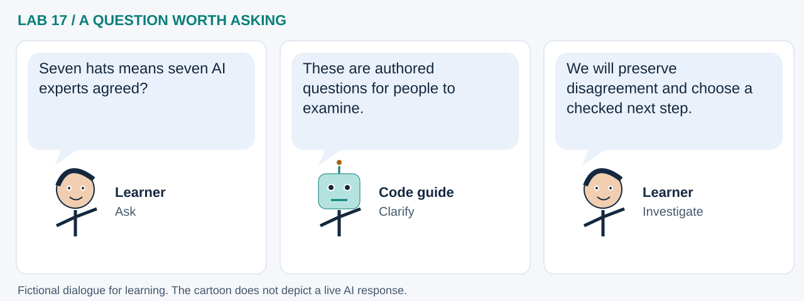

LAB 17 · 32-SECOND VISUAL WALKTHROUGH
More perspectives, accountable decisions
How can people question a GeoAI result from several useful angles?
Silent, captioned storyboard. Use the player to pause, seek or change playback speed. On a small screen, use fullscreen or read the transcript below. The diagrams explain the method; they are not recordings of a live model run.
Download MP4 · Captions · Open infographic at full size

What runs here?
The bundled CSV and authored perspective table are processed locally with pandas and Markdown rendering.
Human interpretation and governance: Python formats prompts; it does not run autonomous hat agents.
Transcript and code landmarks
- 00–08s · Ground
Name the case and trace what the report actually contributes.
risk = pd.read_csv(...) - 08–16s · Question
Use six perspectives plus the project's purple synthesis extension.
hats = pd.DataFrame(...) - 16–24s · Discuss
Turn the table into a workshop agenda that invites disagreement.
for r in hats.itertuples() - 24–32s · Act
Assign who will verify a claim and what evidence would change the decision.
display(Markdown(...))
The common misconception

Read the cartoon dialogue
- Seven hats means seven AI experts agreed?
- These are authored questions for people to examine.
- We will preserve disagreement and choose a checked next step.
Try explaining it
What should purple synthesis do with a serious unresolved disagreement?
Check your reasoning
Record the disagreement, its evidence and an owner for follow-up; synthesis should not erase it or invent consensus.
Original educational illustrations and captions authored for this repository. See the notebook for data and software citations.